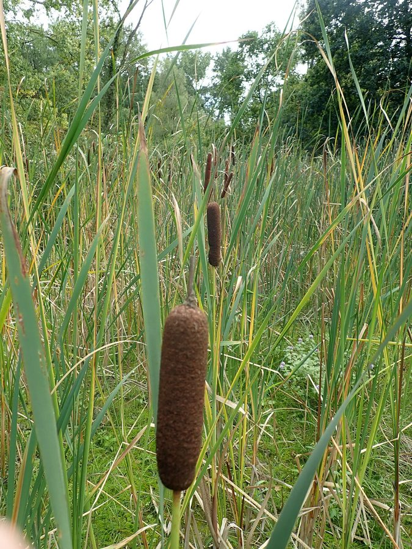

पटेरCommon Cattail
Typha latifolia · Typhaceae · FLR-0089

- Scientific name
- Typha latifolia L.
- Family
- Typhaceae
- Hindi
- पटेर
- Status here
- native
- IUCN
- not evaluated
When to look कब देखें
Present all year.
पटेर / Common Cattail
Typha latifolia L. — Typhaceae
पटेर (पत्रा / कैटटेल / बुलरश / रीडमेस) — पूर्वी उत्तर प्रदेश के तालाबों के किनारों, धीमी गति से बहने वाली नहरों, जलभराव वाले गढ्डों और दलदली क्षेत्रों में उगने वाला एक बहुत ही आम, सीधे तनों वाला और बहुवर्षीय जलीय शाकीय पौधा (tall straight perennial wetland herb) है। इसकी ऊंचाई लगभग 1.5 से 3 मीटर तक होती है। इस पौधे की सबसे बड़ी और अचूक पहचान इसके तने के शीर्ष पर लगने वाला मखमली, डंडे या चॉकलेट सॉसेज के आकार का गहरा भूरा फल-गुच्छ (sausage-shaped dark brown seed head) है, जिसे अंग्रेजी में 'पोकर' या 'मेस' कहा जाता है। इसके लंबे, तलवार जैसे पत्ते (spongy, sword-like leaves) मोटे और अंदर से स्पंजी होते हैं। जब इसके फल पूरी तरह पककर फटते हैं, तो लाखों छोटे बीज सफ़ेद रेशमी रेशों (silky down) के साथ हवा में उड़ जाते हैं, जिससे पूरा वातावरण सफेद रुई जैसे रेशों से भर जाता है। पारिस्थितिक रूप से, पटेर के झुंड जलीय पक्षियों जैसे जलमुर्गी (Common Moorhen, BRD-0057) और यूरेशियाई कूट (Common Coot, BRD-0058) को घोंसले बनाने और छिपने के लिए अत्यंत आवश्यक आवास प्रदान करते हैं। इसकी पत्तियों का उपयोग चटाई और झोपड़ी की छत बनाने के लिए किया जाता है।
Quick Identification त्वरित पहचान
| Feature | Description |
|---|---|
| Plant habit | Tall, erect, clump-forming perennial wetland herb up to 1.5–3 meters, spreading via thick creeping rhizomes |
| Leaves | Upright, long (1.0–2.0 m), narrow (10–20 mm), sword-like, greyish-green, and spongy inside with air canals |
| Spike | Unmistakable: a long, cylindrical, velvet-textured dark brown spike (15–30 cm) at the stem tip |
| Seed dispersal | The dry brown spike bursts open in late autumn, releasing a massive cloud of white, fluffy seed down |
| Flowers | Monoecious; male flowers are in a pale yellow spike at the very top, and female flowers are in the thick brown spike below, touching each other |
Field tip: Stand near a marshy pond in October. Look for tall, flat, grey-green leaves rising straight from the water. Look for the chocolate-brown, sausage-like spikes at the top of the stems. If you squeeze a ripe, dry brown spike, it will burst in your hand, releasing a massive handful of white cotton-like fluff.
Morphology आकारिकी
Biometrics (typical measurements of mature plants in the northern Indian plains):
| Measurement | Range |
|---|---|
| Plant height | 1.5–3.0 m |
| Leaf length | 1.0–2.0 m |
| Leaf width | 10–20 mm |
| Spike length | 15–30 cm |
| Spike diameter | 2.0–3.5 cm |
| Seeds per spike | 200,000–300,000 |
Stem and Rhizomes: Stems are unbranched, solid, round, smooth. The underground rhizomes are thick, starch-rich, creeping horizontally through low-oxygen mud to shoot new clumps.
Foliage: Linear, sword-like, flat, sheathing at the base. The leaves have air-filled chamber tissues (aerenchyma) that allow oxygen to travel down to the buried roots.
Flowers: Small, lacking petals. The upper male spike and lower female spike are continuous (touching each other), which is a key identification feature.
Fruit and Seeds: Tiny, single-seeded nutlets attached to long hairs (pappus) that act as parachutes to float on wind and water.
Associated Species / Interactions संबंधित प्रजातियाँ
- Waterbird Nesting Web:
- Coots and Moorhens: The thick, floating green leaves are woven together by the Common Coot (Fulica atra) and Common Moorhen (Gallinula chloropus) to build floating bowl nests anchored to the cattail stems.
- Pollinators: Primarily wind-pollinated, but hoverflies feed on the abundant yellow pollen of the upper male spike in summer.
Pests and Diseases कीट और रोग
- Cattail Moth: Larvae feed on the developing brown spikes, webbing them together and preventing wind dispersal.
- Leaf Spot Fungus: Phyllosticta causes brown streaks on the long leaves during high monsoon humidity.
- Root Rot: Caused by anaerobic bacteria in stagnant, heavily polluted waters.
Traditional and Ethnobotanical Use पारंपरिक और नृवंशवनस्पति उपयोग
- Woven Pater Mats (Chatai): The long, spongy leaves are harvested in winter, split, dried in the shade, and woven by villagers to make thick, comfortable sleeping mats (pater ki chatai) that provide natural insulation from cold floors.
- Traditional Fluff Stuffing: The soft white seed down collected from burst brown spikes was traditionally used as a cheap stuffing material for pillows and quilts.
- Edible Wild Shoots: The young white shoots emerging from underground rhizomes are peeled in spring and eaten raw as a crisp salad, or cooked as a vegetable.
- Natural Tinder: The dry brown spikes are collected in winter, soaked in oil, and used as torches, or the dry seed fluff is used as an easy-to-light tinder to start cooking fires.
Expected Locally स्थानीय रूप से अपेक्षित
Not a field record. Written from published accounts for eastern Uttar Pradesh. No confirmed local sighting yet — if you have seen it, that is what the atlas needs.
अभी तक स्थानीय पुष्टि नहीं। यह विवरण प्रकाशित स्रोतों से है, किसी अवलोकन से नहीं।
A very common resident plant in all wetlands and farm ditches throughout the Basti district, regularly observed in the Harraiya, Vikramjot, and Basti blocks. Residents state that the plant grows dense in village ponds (pater ki jhari). During September, the sight of children popping the ripe spikes to play with the floating white seed fluff is a familiar rural scene.
Distribution वितरण
Global range: Native to temperate and subtropical regions of the Northern Hemisphere (cosmopolitan wetland plant).
In India: Widespread in all states in freshwater marshes, lake margins, and wetlands.
In Uttar Pradesh: Abundant state-wide, especially in low-lying Gangetic river basins.
In Basti district / eastern UP: Widespread across all wetland blocks.
Research Questions शोध प्रश्न
Anyone can investigate these | कोई भी इन प्रश्नों की जाँच कर सकता है
- How many days does a single Coot pair take to build its nest using dry Cattail leaves in your local pond? — Record nesting observations.
- What is the water absorption rate of dry Cattail seed down compared to cotton? — Conduct absorbency experiments.
- How many new shoots emerge from a 1-meter section of creeping Cattail rhizome in wet mud over three months? — Track vegetative growth.
- Does the length of the brown spike increase in plants grown in deep water compared to shallow mud? — Measure and compare spike sizes.
- Does the soot from burning dry Cattail leaves act as a natural pigment for coloring clay pottery in Basti? / क्या पटेर के सूखे पत्तों को जलाने से निकलने वाली कािख (Soot) बस्ती में मिट्टी के बर्तनों को रंगने के लिए प्राकृतिक रंग का काम कर सकती है? — Conduct clay staining experiments.
Similar Species मिलती-जुलती प्रजातियाँ
| Species | How to tell apart | comparison |
|---|---|---|
| Common Reed (Phragmites karka) | Leaves are thin, flat; stems are hollow; flowers are large, feathery purplish-brown plumes | सरकंडा — खोखले तने, मखमली भूरी फूल मंजरी |
| Narrow-leaved Cattail (Typha angustifolia) | Leaves are much narrower (5-10 mm); male and female spikes are separated by a clear gap of 2-5 cm | संकीर्ण पटेर — बारीक पत्तियां, नर और मादा फूल अलग |
| Kans Grass (Saccharum spontaneum) | Grows on dry river sand; leaves are thin, sharp; flowers are silver-white feathery plumes | काँस — सफेद चमकीले फूल, पानी के बाहर निवास |
Field rule: Tall wetland herb (1.5–3 m) with thick, spongy sword-like leaves, and a single chocolate-brown sausage-like velvet spike at the stem tip, is the Common Cattail (Pater).
Taxonomy & Classification वर्गीकरण
Original description. Carl Linnaeus described the Common Cattail as Typha latifolia in 1753 in his Species Plantarum (Vol. 2, p. 971). The type locality was listed as Europe (in marshes). The genus name Typha is the ancient Greek name for the plant, derived from typhos, meaning smoke or cloud, referencing the smoky appearance of the dispersing seeds. The specific name latifolia is Latin for broad-leaved.
Subspecies. Monotypic — no subspecies are currently recognised.
Family and order placement. Placed in the order Poales, family Typhaceae (cattail family), which contains only the two genera Typha and Sparganium.
Phylogenetic notes. Typha latifolia represents a specialized aquatic monocot lineage that has evolved spongy leaf tissues (aerenchyma) and dense seed plumes to maximize wind dispersal and colonize shallow wetland edges globally.
IUCN status rationale. Not evaluated (NE) by the IUCN Red List. It has an extremely secure, stable global population across its cosmopolitan range.
Photo Gallery फोटो गैलरी
References संदर्भ
- Linnaeus, C. (1753). Species Plantarum. Laurentii Salvii, Holmiae, Vol. 2, p. 971. [original description]
- Brandis, D. (1906). Indian Trees (includes woody Typhaceae relatives). Archibald Constable & Co., London.
- Bor, N. L. (1960). The Grasses of Burma, Ceylon, India and Pakistan (covers Poales family keys). Pergamon Press, Oxford.
- Morton, J. F. (1975). Cattails (Typha spp.) — Weed Problem or Productive Resource?. Economic Botany (focuses on ethnobotanical uses).
- World Flora Online (2024). Typha latifolia details.
- GBIF Occurrence Data — Typha latifolia, India (2010–2025).
Source file: species/flora/aquatic/cattail.md